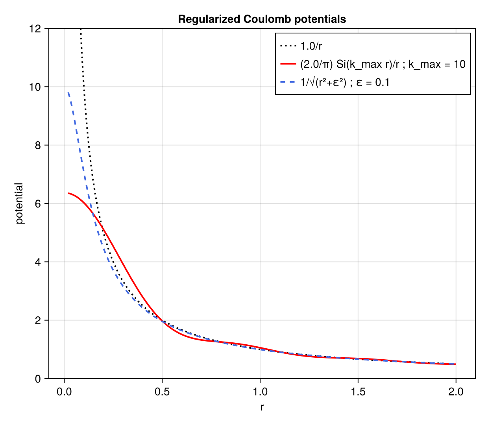
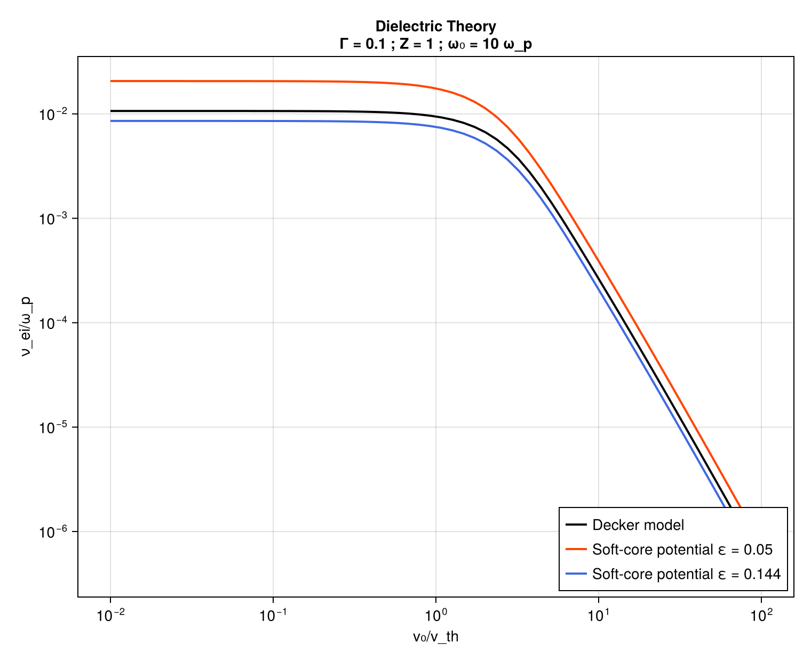
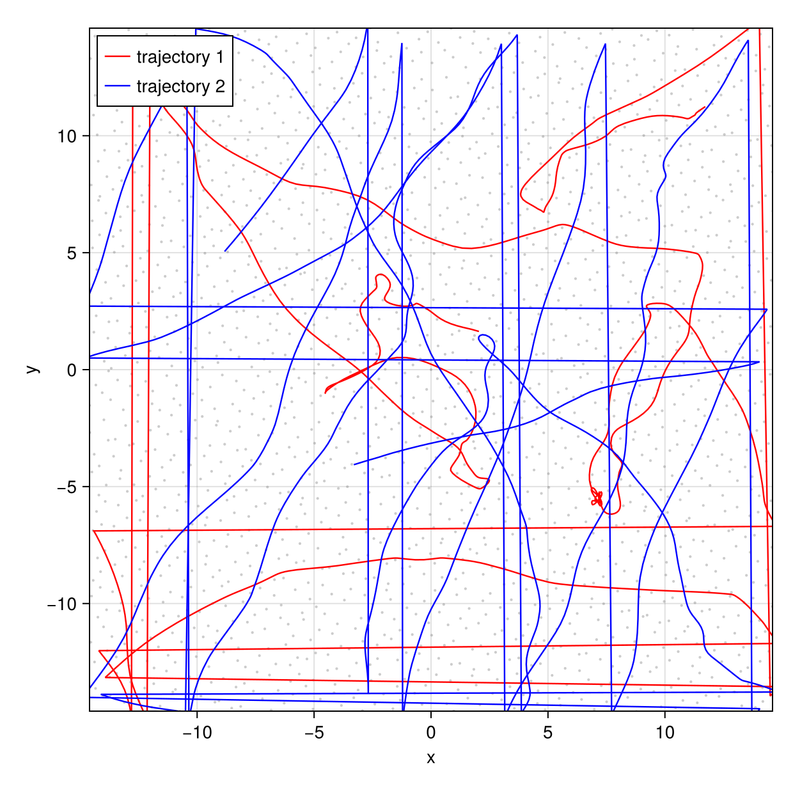
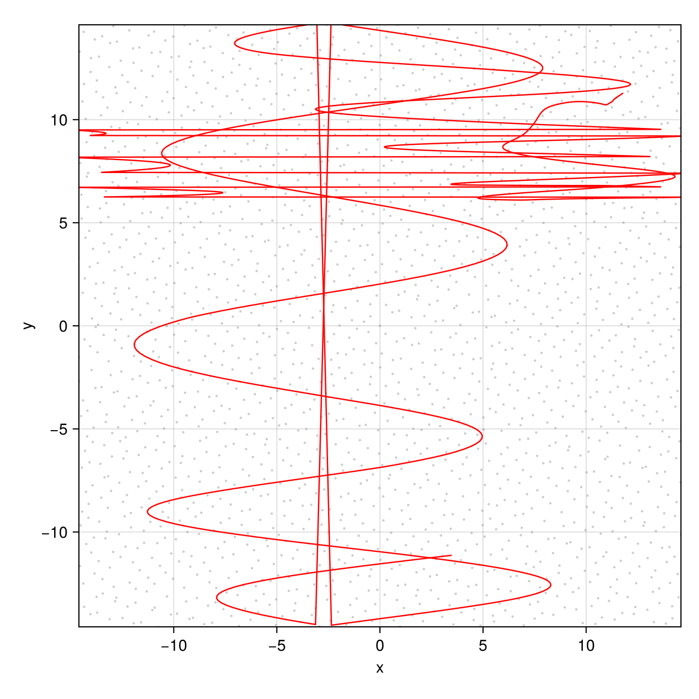
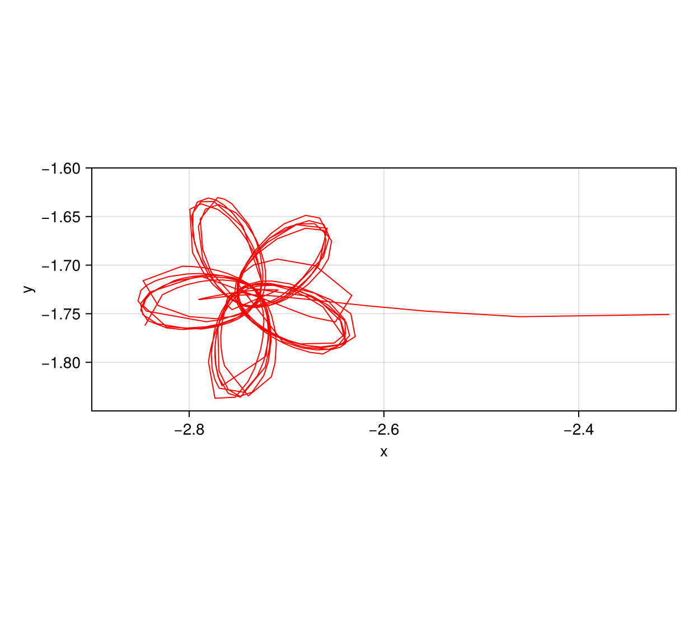
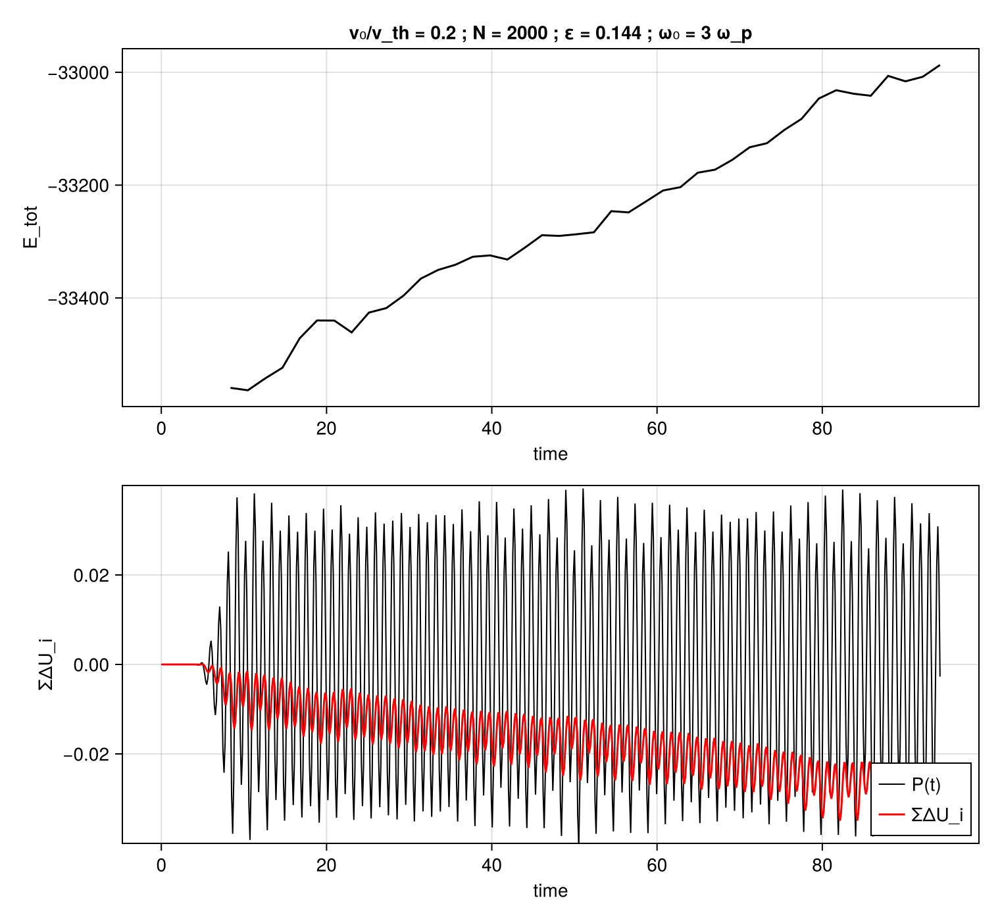
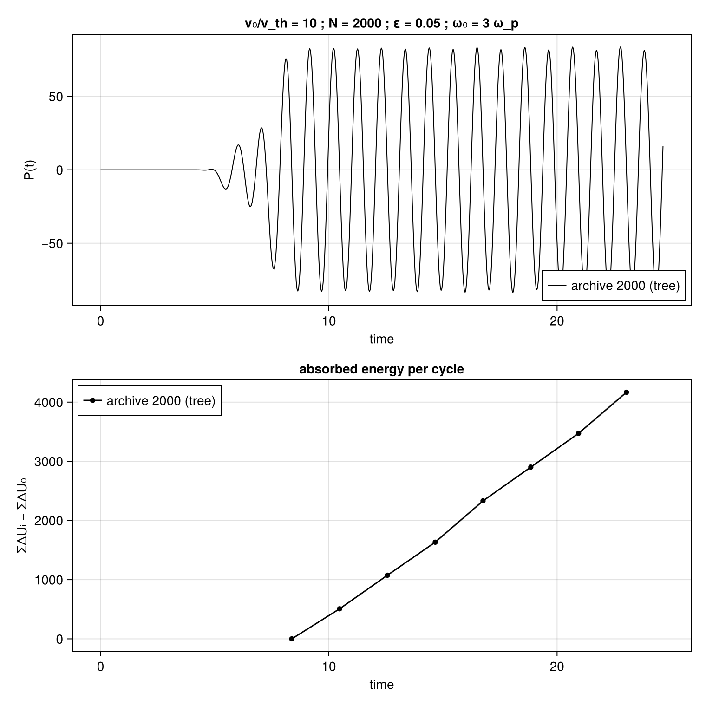
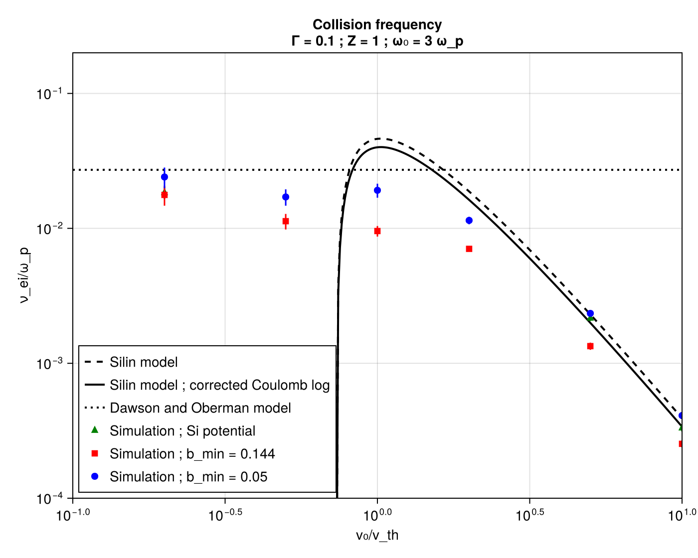
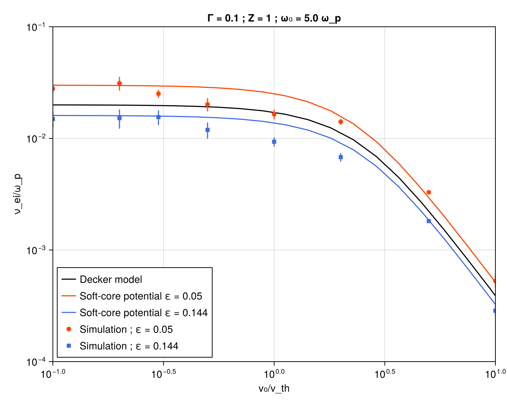
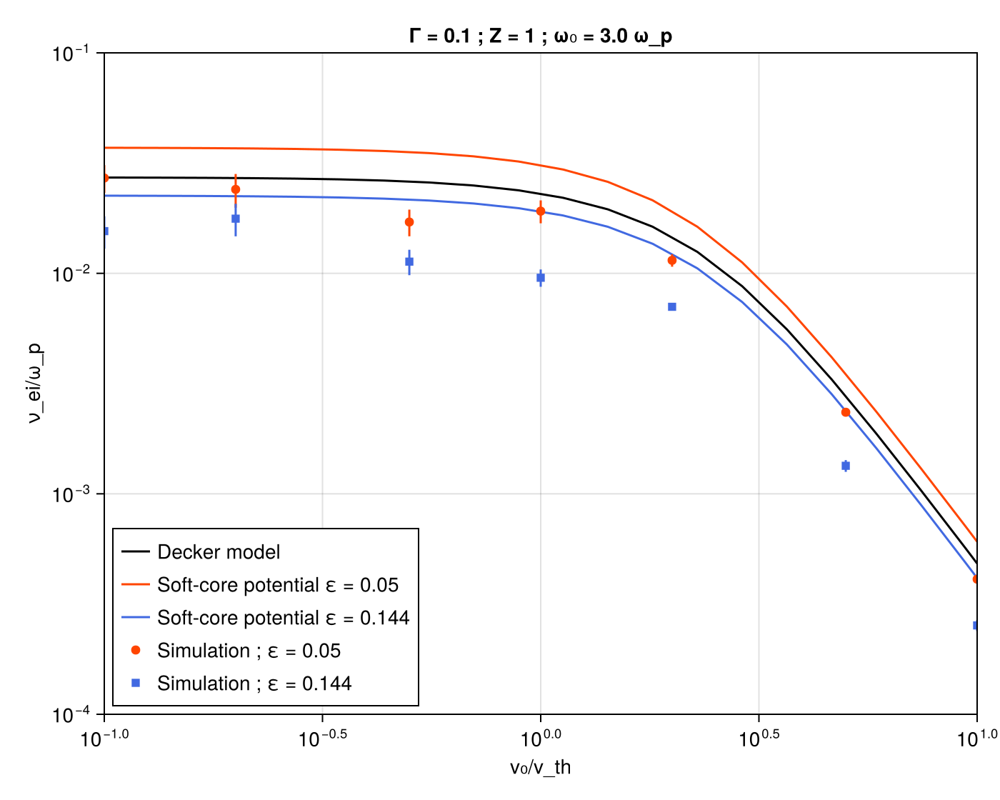

Figure gallery
The 2000 presentation cites ten result figures; all ten are reproduced here. (Two further archived plots, indiv and indiv2, are shown on the method in pictures page.)
The point of this page is provenance. Each entry says whether the curve was recomputed by this port or redrawn from archived 2000 output, and which script produces it. Nothing here is a fit, and nothing is traced by hand.
julia --project=. figures/build_all.jl # everything, PNG + PDFIndividual scripts run standalone from the repository root. Redrawing archived data does not rerun a simulation; the bundled files live in figures/data/, whose README.md records where each came from. diel_w10.jl and expew.jl evaluate the dielectric theory and are the slow ones.
| Figure | Script | Curves | Points |
|---|---|---|---|
cutoff | figures/cutoff.jl | recomputed | — |
Diel.w10 | figures/diel_w10.jl | recomputed | — |
traj157, traj79 | figures/traj.jl | archived | archived |
mesure157 | figures/mesure157.jl | archived (Grace) | — |
mesure79 | figures/mesure79.jl | archived (power.dat, deltaU) | archived |
fig5b | figures/fig5b.jl | archived | archived |
expew5, expew3 | figures/expew.jl | recomputed | archived |
fleur | figures/fleur.jl | archived | archived |
Potentials and theory
cutoff

Bare 1/r, the Fourier-cutoff form (2/π)Si(k_max r)/r, and the soft core 1/√(r²+ε²) that the dynamics use. All three computed in Julia.
The reason for the choice is visible near r ≈ 1: the Fourier cutoff rings above and below the true potential at separations where nothing has been regularized, while the soft core departs monotonically and only where intended. PDF
Diel.w10

Dielectric theory at ω = 10 ω_p, recomputed by this port (src/dielectric.jl, ported from decker.c) — reference model plus the same theory evaluated at the two soft-core lengths the simulation uses. Agreement with the archived curves is ≤ 2 %. The spread between the two softening choices, about a factor of two, sets the scale against which the simulation/theory comparisons below should be judged. PDF
Trajectories
Qualitative, and archived. Chaotic divergence means these cannot be compared quantitatively between runs or codes; they are shown for what is visible in them.
traj157 and traj79


(x, y) projection, grey dots a snapshot of all 2,000 electrons, coloured lines the traced paths. F₀ = 1.57 (v₀/v_th ≈ 0.2) and F₀ = 79 (v₀/v_th ≈ 10).
Two things to note as a reader of the plot rather than the physics. The long straight segments crossing the frame are periodic wrap-arounds, an artifact of joining successive recorded positions across a boundary, not motion. And the sweeps in traj79 reach about 9 units, against F₀/ω² = 8.8 for an isolated electron — a cheap check that the archived data is what it claims to be. PDF · PDF
fleur

A sub-unit-wide zoom on one electron captured near an ion, from the r_ws = 1 direct run. The rosette is the numerical target of the adaptive integrator: the turn radius here is what sets the required step, and it is several orders of magnitude below what the wandering paths above would need. PDF
Absorption measurements
mesure157

v₀/v_th = 0.2, N = 2000. Upper panel: E_tot, rising steadily once the field is established. Lower: instantaneous P(t) against the accumulated per-cycle balance. The two panels carry the archived plotting script's own normalization and sign convention, so the cumulative curve's direction and scale are not physically meaningful on their own — its linearity is. PDF
Provenance discrepancy, recorded rather than resolved: the Grace project for this figure sits under a directory marked a00, while the identified C input for the corresponding run says a01 (r_pot = 0.144). The plotted values are those in the Grace project. A directory name is not evidence about run parameters.
mesure79

v₀/v_th = 10, N = 2000, redrawn from the surviving raw power.dat and deltaU. P(t) is flat until t ≈ 4, ramps over four time units, then oscillates at ±80; ΣΔU runs from 0 to ≈ 4150 over fifteen time units, one marker per cycle. Its slope is one point of the result figures below.
This is also the run reproduced by examples/replay_archive.jl 79; setting LASERPLASMA_RUN=runs/replay_mesure79 overlays your own run on the archived curve. PDF
Collision frequency
fig5b

ω = 3 ω_p. Archived simulation points with error bars against Dawson–Oberman (flat dotted), Silin (dashed) and Silin with corrected Coulomb logarithm (solid). Both curves and points come from the archived Grace project — this port does not recompute these particular model curves. PDF
expew5 and expew3


ω = 5 ω_p and ω = 3 ω_p. The lines are dielectric theory recomputed in Julia; the markers are archived simulation points. Curves are drawn for both softening lengths and the markers are coloured by the softening each run used, so the comparison is like-for-like.
Simulation sits below theory through the intermediate range by more than the error bars, at both frequencies. That offset is in the original results and is reproduced here, not smoothed. PDF, ω = 5 ω_p · PDF, ω = 3 ω_p
Replaying a historical run
julia --project=. examples/replay_archive.jl 79 25.0
julia --project=. examples/replay_archive.jl 157 25.0N = 2000, r_ws = 1.442, kT = 6.935, ω = 3, relativistic, tree with theta = 0.5 and quadrupole moments, individual steps, thermostat on. The two differ as the originals did: F₀ = 79, r_pot = 0.05, nb_step = 32, tolerance 0.001748 versus F₀ = 1.57, r_pot = 0.144, nb_step = 8, tolerance 0.01. The archived runs requested xfinal = 368.614; the second argument here is whatever horizon you are willing to wait for.
Checkpoints are written at cycle boundaries and the integrator is a one-step method, so resumption is exact: rerunning the same command continues in runs/replay_mesure79/ or runs/replay_mesure157/.
Expect your trajectories not to match the archived ones. Only the cycle-averaged quantities are comparable, and comparing them requires several sample values so the scatter can be estimated alongside the mean.